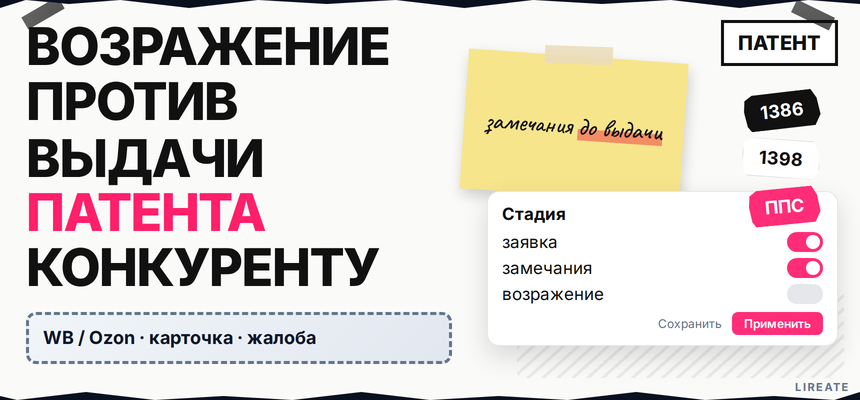
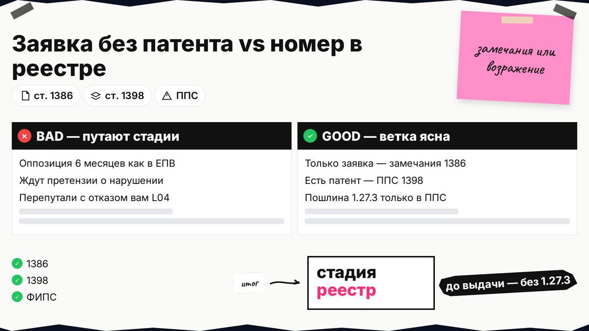
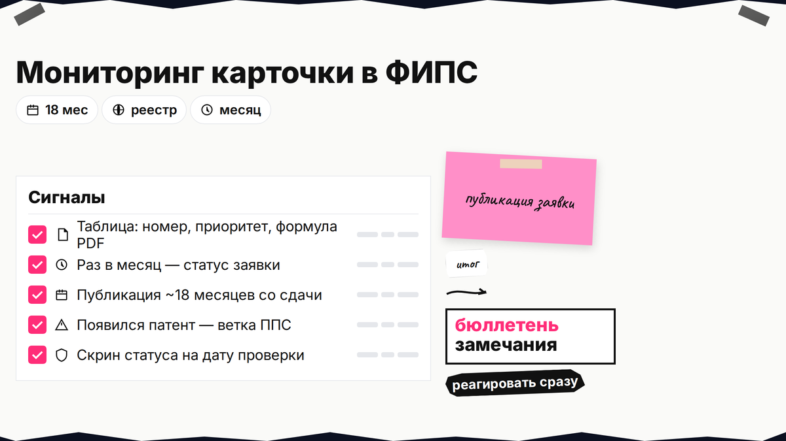
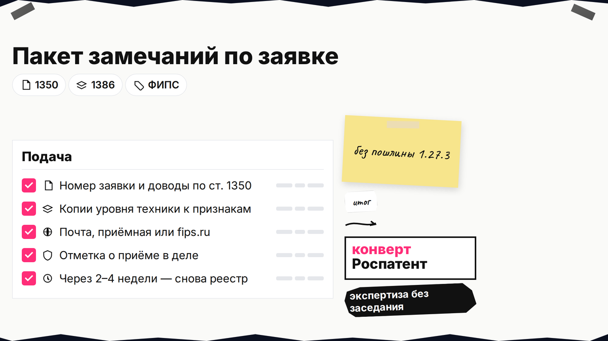

Заявка конкурента перекрывает вашу нишу устройств, а в поиске вам сулят "оппозицию на 6 месяцев". В России у третьего лица два пути: замечания по опубликованной заявке до решения Роспатента и возражение в ППС (Палата по патентным спорам - внутренний орган Роспатента, который разбирает споры по патентам), если номер патента уже в реестре. Вы выберете ветку, соберёте уровень техники и не перепутаете сценарий с отказом вам (L04) или с товарным знаком (L08).

TL;DR / Быстрый инсайт: Заявка публикуется примерно через 18 месяцев (ст. 1385). До решения по заявке любое лицо может подать замечания о несоответствии ст. 1350 (абз. после п. 5 ст. 1386) без пошлины п. 1.27.3. После выдачи - возражение в ППС (ст. 1398, п. 3.2.1): 7 000 руб. за независимый пункт, коллегия. "6 месяцев для конкурента" в РФ нет - это срок ответа заявителя по ст. 1387.
Материал для производителя и владельца продукта на Лирейт: только патент на изобретение, полезную модель или промобразец, не ПСН и не миграционный патент. Нормы на 10.11.2026; не индивидуальная консультация. Стратегию своей защиты см. в L05.

SERP часто смешивает замечания по чужой заявке, возражение против выданного патента, возражение заявителя на свой отказ и претензию о нарушении. Для конкурента на рынке устройств нужны только первые два инструмента.
| Стадия | Инструмент | Срок | Пошлина | Заседание |
|---|---|---|---|---|
| Заявка опубликована, патент нет | Замечания (ст. 1386) | До решения по заявке | Не п. 1.27.3 | Нет |
| Есть номер патента | Возражение в ППС (ст. 1398) | Пока патент действует | 7 000 руб. × пункт | Да |
| Отказ вам | Возражение заявителя (ст. 1387) | 7 месяцев | п. 1.27.1 | Да |
| Чужой знак | ППС по ТЗ | Иные | 14 000 руб. | Да |
Делайте: смотрите карточку в реестре ФИПС - есть поле "патент" или только "заявка". Не делайте: переносить европейскую оппозицию 6 месяцев на РФ.

Обычная публикация - около 18 месяцев с подачи; досрочно заявитель может попросить до 12 месяцев (ст. 1385). Пока в карточке только номер заявки без патента, вы в "зелёной" ветке замечаний; как только появился номер патента и дата выдачи - считайте, что окно замечаний закрыто и нужен ППС.
Делайте: реагировать сразу после бюллетеня. Не делайте: откладывать до претензии о нарушении, если ещё идёт экспертиза.
Уровень техники - все общедоступные сведения до даты приоритета конкурента: патенты, статьи, каталоги, публичные демонстрации (п. 2 ст. 1350). Изобретательский уровень - решение не было бы очевидным специалисту в этой области.
Схема: признак формулы → источник до приоритета → вывод (нет новизны / нет ИУ) → приложение к письму в Роспатент
Для производителя устройств удобна таблица "признак формулы - ваш продукт - старый патент / каталог". Так видно, где спор идёт по конструкции, а где по способу. Делайте: один признак - один источник с датой. Не делайте: опираться на "рынковые слухи" без публикации.

Любое лицо вправе направить замечания о несоответствии ст. 1350. Замечания учитываются при решении, подаватель не участвует в производстве (абз. после п. 5 ст. 1386).
Делайте: писать по признакам формулы. Не делайте: ждать "гарантии" отмены выдачи.
Оспаривание - п. 1–2 ст. 1398: подать может любое лицо в срок действия патента. Типовое требование - признать патент недействительным полностью или частично (убрать "лишние" пункты формулы). В письме обязательны номер патента, доводы, требуемое решение и квитанция п. 1.27.3 (таблица пошлин; для полезной модели и промобразца по регламенту - 5 000 руб. за пункт, для изобретения - 7 000 руб., п. 5–6 Правил).
| Сценарий | Пошлина | Гайд |
|---|---|---|
| Конкурент, выданный патент | 7 000 руб. × независимый пункт (п. 1.27.3) | Эта статья |
| Отказ вам | 3 000 руб. × пункт (п. 1.27.1) | L04 |
| Чужой товарный знак | 14 000 руб. (п. 2.28.4) | L08 |
Подача возражения - право, а не злоупотребление (СИП). Делайте: сначала Роспатент, потом суд (п. 2 ст. 1248). Не делайте: платить 14 000 руб. "по привычке" как за знак.
Workflow ППС: подача → регистрация (до 5 р.д.) → отзыв правообладателя (до 10 р.д. до заседания) → заседание → при удовлетворении патент недействителен с даты подачи заявки (п. 5 ст. 1398)
Сложный поиск и формулы - поверенному; споры можно обсудить на странице патентования Лирейт. Делайте: устную линию = письменная таблица. Не делайте: новые источники на заседании без приложения.
Если замечания не остановили выдачу - сразу переходите на ветку ППС, не теряя месяцы на переписку с конкурентом. Если коллегия отказала, оцените суд по ст. 1248 и инструменты после решения: таможенный контур для ввоза аналогов разобран в L31. Параллельно рассматривайте лицензию, изменение конструкции без нарушения формулы и собственную заявку на улучшение - сравнение режимов в L05.
Делайте: календарь с даты публикации заявки. Не делайте: путать атаку на выдачу с ответом на претензию о нарушении.
Расчёт пошлины по пунктам и сопровождение до заседания - на услуге патентования Лирейт.
Материал проверен: эксперт Елена Ковалева (главный эксперт по SEO/GEO), редакция Лирейт.
Достоверность данных: ст. 1350, 1385–1387, 1398, 1248 и Правила ППС сверены с КонсультантПлюс и таблицей пошлин на 10.11.2026; Вордстат в среде подготовки не запрашивался.
Нет постпубликационной оппозиции как в ЕПВ. Шесть месяцев по ст. 1387 - ответ заявителя на уведомление о патентоспособности. Третье лицо: замечания до решения по заявке или возражение в ППС пока патент действует.
Замечания - до выдачи, без п. 1.27.3 и без заседания, без участия в процессе. Возражение - после выдачи, 7 000 руб. за пункт, коллегия и отзыв правообладателя.
21 000 руб. пошлины по п. 1.27.3 (3 × 7 000), без услуг поверенного и переводов.
Достаточно любого лица, которому стало известно о нарушениях (п. 2 ст. 1398). Заинтересованность рынком полезна, но не обязательна.
Да. Претензия о нарушении и оспаривание выдачи - разные линии; административный порядок - до суда (ст. 1248).
До бюллетеня полный текст формулы обычно закрыт. Следите за номером заявки в реестре, настройте оповещение о досрочной публикации (до 12 месяцев) и заранее закажите поиск уровня техники, чтобы после открытия описания успеть подать замечания до решения экспертизы.
В реестрах ФИПС: после публикации по ст. 1385 доступны описание и формула.